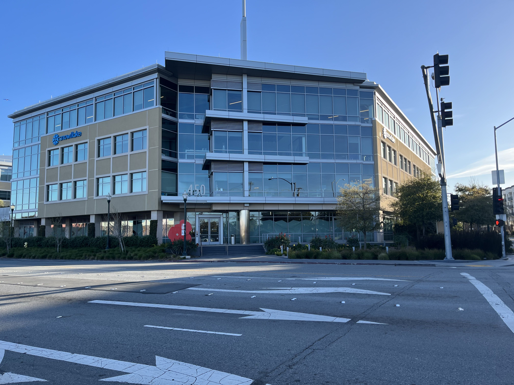
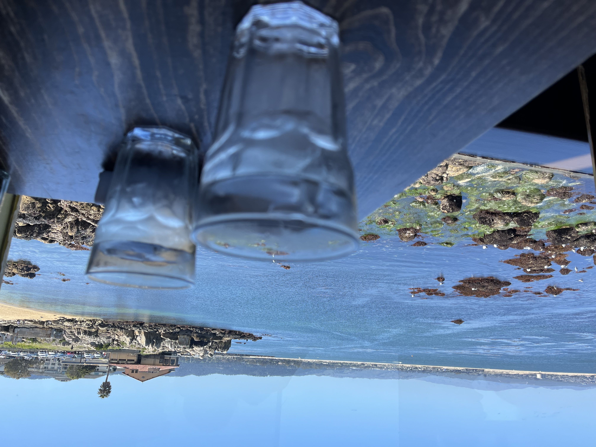
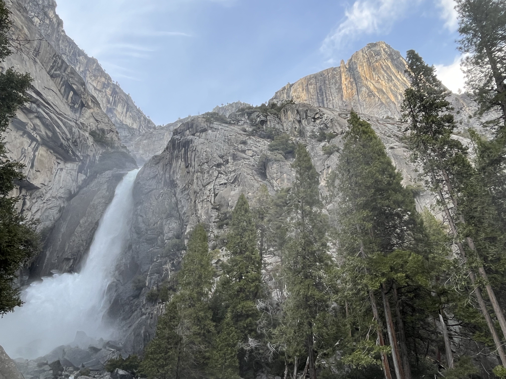
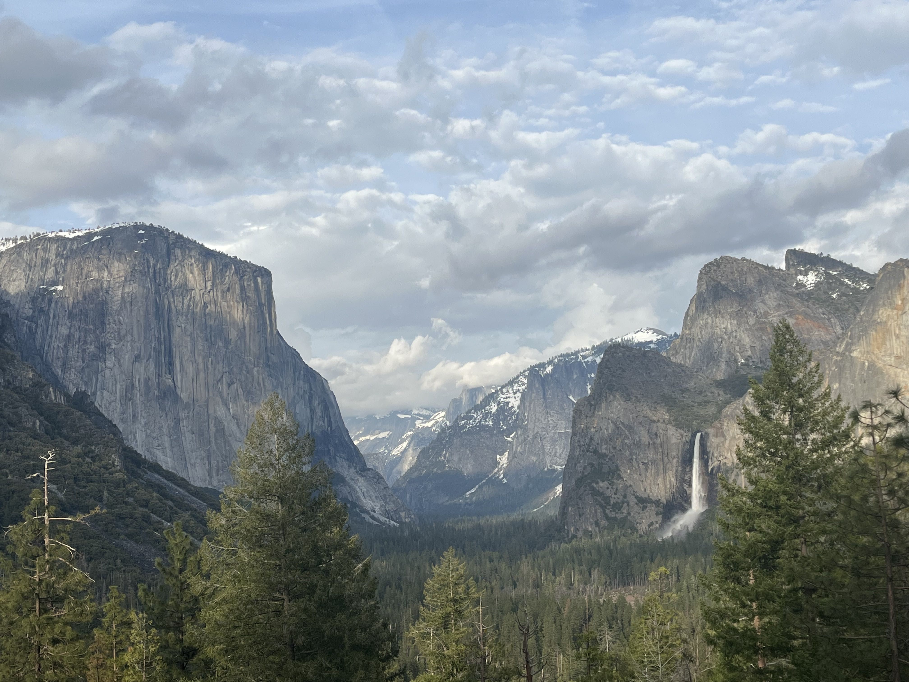
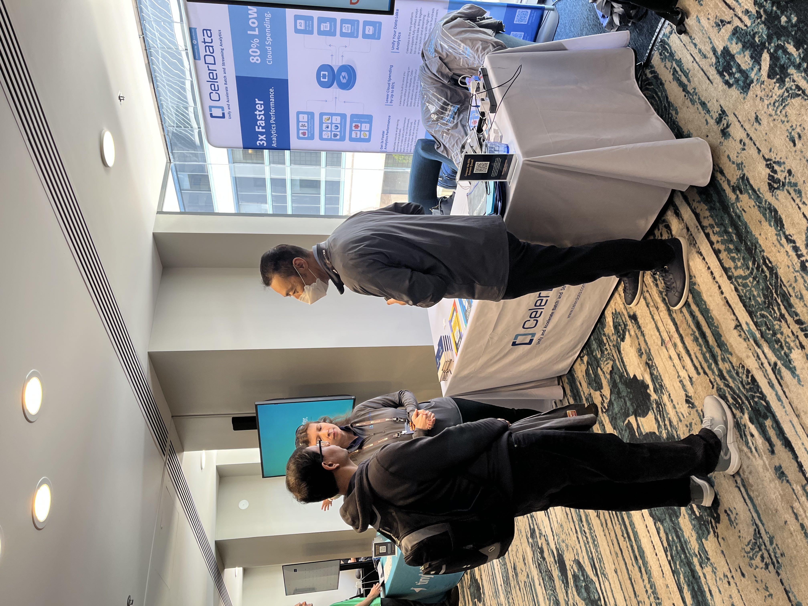
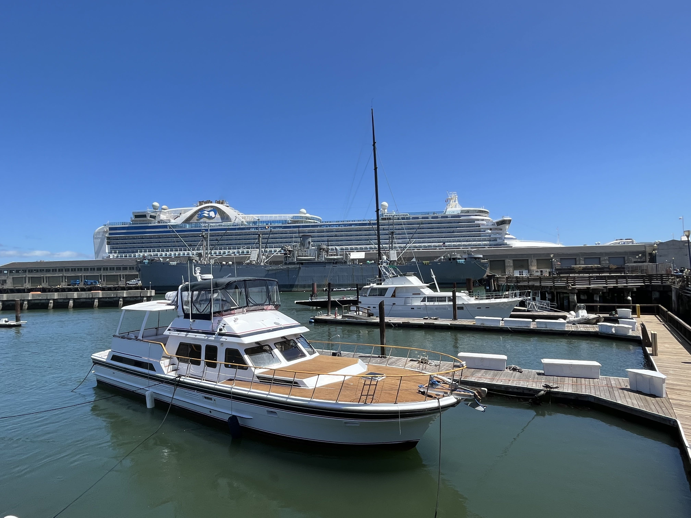
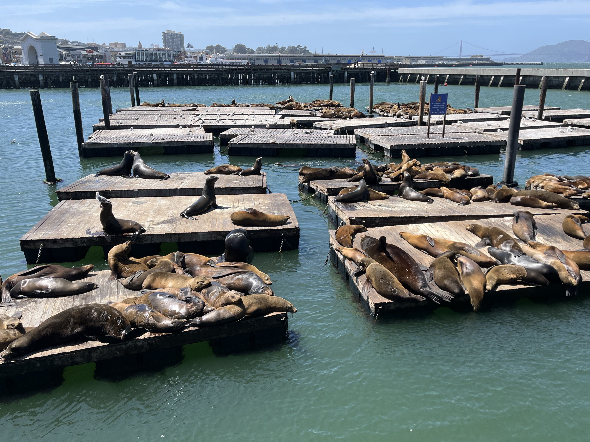
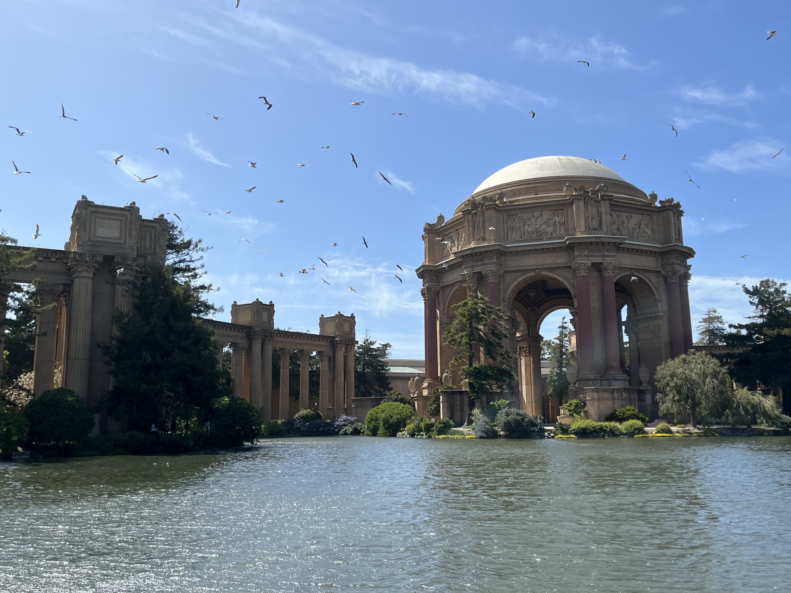
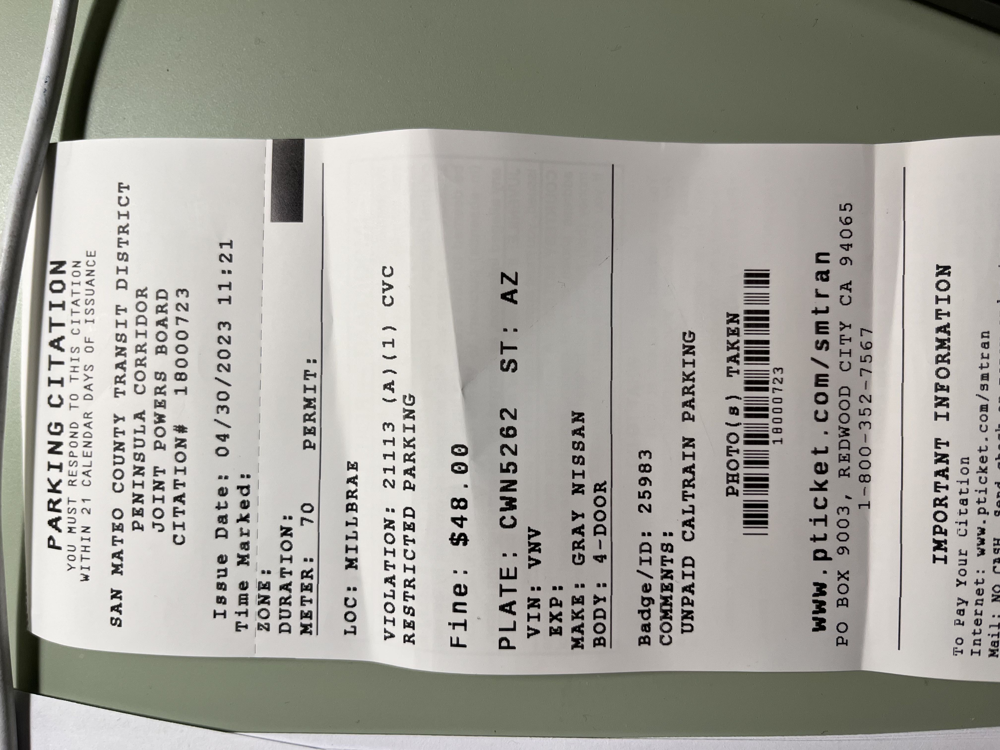

美国出差日记 - 4月
4.3 - 4.7 上班
4.8 今天早上10点左右出发，沿着金门大桥和UCB看了一圈，然后穿过Oakland到了Fremont算是吃了顿完饭，然后回到San Mateo那边看了一下Snowflake HQ. 算是搞了个湾区打卡景点一日游吧。

4.9 今天同样早上11点左右出发，去了附近的EdgeWoord Park搞了一个差不多2个小时的hiking. 太阳特别大，走到后面都没有什么力气了。回到Redwood City的一个印度餐厅吃了顿午饭，下午准备去单位加班。
4.10 - 4.14 上班
4.15 又沿着1号公路到了big sur一趟，中途去monterey的fish hopper吃了海鲜。事先没有询问market price, 吃饭之后才发现一个海鲜大餐共计210$. 回来的比较早，晚上7点左右在cupertino附近的DeAnza社区吃了顿湖南菜（眷湘）。

4.16 早上去住处附近的Sand Hill转了一下，然后去Palo Alto downtown吃了个Taste中餐，完了点了杯blue bottle. 感觉没啥好喝的，有点发酸的感觉。下午在单位加班到了晚上9点左右，算是初步折腾点东西出来了。
4.17 - 4.21 上班. 这周Murphy就要回国了，下周Rowen也要回国了。在sixt上看了一下租车价钱，超过1个月之后每天的租车费用和保险费用会下降很多，然后保持在一定的值上。
| 2个月 | 1个月 | 7天 | |
|---|---|---|---|
| 车费 | 36.15 | 36.14 | 50.32 |
| 保费 | 37.08 | 37.17 | 43.34 |
4.22 早上去租车，发现他们28天是一个敏感周期，超过28天就算是long term, 可以绑定另外一个工作同事的驾照。然后超过28天的话会有更多的优惠，这些优惠不只是体现在这个价格上，还能在升级车型配置上。所以下次如果要组28天，要需要升级到30天。
4.22 - 4.23 到Yosemite去看看，单程差不多就开了4个小时。第一天走了几个景点：tunnel view, el captain, bridalveil falls, yosemite falls. 还想去hald dome, 感觉有点累的不行了。晚上住在park外面的view lodge, 这边没有wifi, 一天租赁的费用是9.99只能连接两个设备。明天还想去glacier point和mariposa grove, glacier point估计要走断腿了，然后开一个半的车子才能到grove那边。这几周搞的有点累，后面几天一定要好好休息回来。


4.24 - 4.26 这几天去参加了个在SF downtown里面举办的RTA(realtime analytics summit)，主办方是startree. 参会方也没有太多，我我现在都能记得清楚：startree(pinot), risingwave, imply(druid), streamnative(pulsar), tinybird.io(下面是clickhouse), decodable(基于flink扩展), presto, starbust(trino). 我去也主要是帮站台，了解了一下其他产品，也帮助回答一些技术问题啥的。去downtown的话，可以先开到millbrae bart station停车，然后做bart到powell station或者是附近站点，不然downtown里面开车实在是麻烦。

4.24 - 4.28 上班，这周Rowen和James回去了，一个房间里面只剩下我一个人，稍微显得有点孤独。另外就是人突然少了，每个人分配到的customers就多了，事情也更多了。
4.29 在单位加了一天班
4.30 把车停在Millbrae，做Brat到Embarcadero这站，然后沿着码头一直走到了Palace of Fine Arts那个建筑那边，然后走回到Powell Station这站，中间还穿过了Chinatown. 经过Union Square的时候，10年前来美国的经历突然就被唤醒了：我曾经是到过这个地方的，并且对面的macy百货我还在里面买了不少东西。算下来估计得走了有10公里了，脚酸的不行了，做Bart回来到Millbrae一看，车上居然还有48美金的罚单，我以为Station附近的parking lot是没有管的，这边的警察周末也在不遗余力地创收啊。



